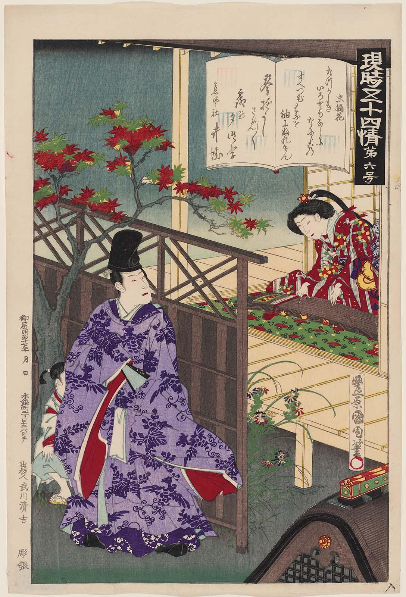
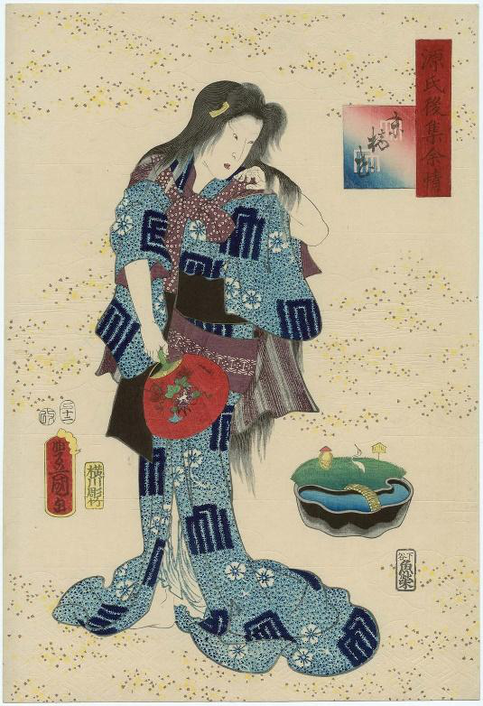
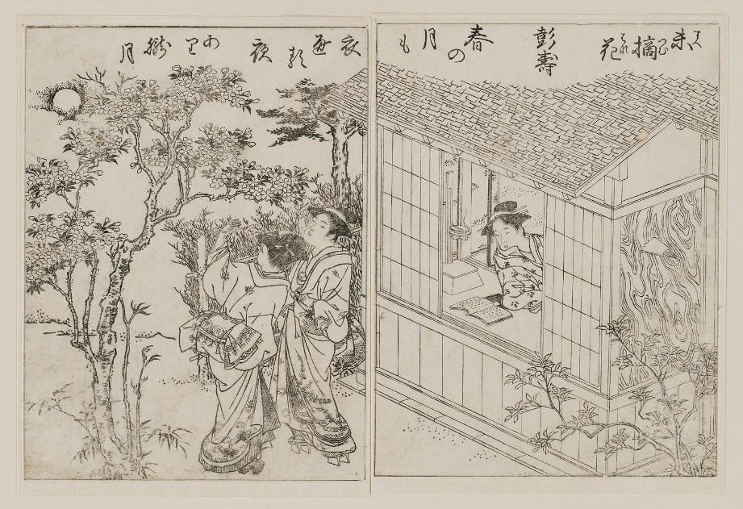

Profile:
Appearance: 141
Torso is very long
Ruddy, weird and unpleasant beyond belief
An obvious red nose
Forehead is board and bulging
A real horse face
Personality:
Silent,Out-dated,Stubborn,Not refined
Does not have specific talent (not good at playing koto as well as cannot make proper robes )
Her love is deep down in her heart
Faithful,Not jealous
Background:
Daughter of Prince Hitachi
Also known Hitachi Princess
After her father died, she lives a improvised life
Her personality relates to the characteristic of safflower
Safflower first relates to Suetsumuhana is in Genji’s returning message after she send him an out-fashioned hue. Genji replies a poem as the following:
Why have I let my sleeves touch the safflower
Plighted my troth to Suetsumuhana.”
Her silence personality
For most of the time, she keeps silence through the whole book. She spends all her time hidden away. She is shy and retiring. During the first time of their meeting, when Genji talks to Suetsumuhana, she just keep silence and does not say any words. She keeps in cruel silence. However, Genji takes her childlike and generous of spirit as the most lovable sort. This is because when men and women begin a relation back the ancient time in Japan. Women are encouraged to keep silence as this show their refined and good manner. As a result, what Suetsumuhana behaves is perfectly obey the rules that the society apply on women. She keeps silent and withdraw because she has a loyal lineage that keeps telling her she should behave as a woman that follows all the manners in the society. However, in Heian period, before actually married, men and women only communicate with each other through poems or messages. They get to know each other through this media. But Suetsumuhana’s silence cuts off their only way of communication which increases her mystery and stimulates his desire to spend a night with her. Her silence also shows her obedience personality that she doesn’t have personal ideas and minds but makes herself as what Genji wants her to be.
Environment in her home and clothing imply her personality
As the daughter of a late Prince, Suetsumuhana has a high recognition of her identity as a princess, a successor of the loyal family. Even though she is losing power and does not have anyone to depend on, she still keeps her pride as one of the loyal family members. In Yomogiu chapter, when her house is decaying and they are running out of money, she refuse to sell her beautifully crafted furniture. She thinks that in this old, familiar residence, she feels as the spirit of her father is still with her. Moreover, the old and worn furniture carries her past memories of glorious life. This also shows her stubborn personality when she waits Genji blindly for two years without knowing the result. Suetsumuhana suffers a huge difference of live condition after and before her father’s death. However, during the whole story, she seldom speaks out her misery of totally two contradictory living condition. She puts almost everything deep down in her heart and leaves a silent personality to other people.
From Suetsumuhana’s clothing, we could actually expose her another personality that she lives in the past world. Her clothing is out of dated, the hue she sends to Genji is also criticized as old-fashioned. Moreover, the gifts she send during the New Year or first trains of the next generation including Akashi Princess are also improper and old types. This indicates that Suetsumuhana indulges in the life of past time. She pursues past clothing as well as old furniture. In this way, her silence could be regard as rejecting the connection with modern world.
Illustrations of Suetsumuhana
Presenting in the MFA, there are several pictures about Suetsumuhana. The first picture depicts the scene when Suetsumuhana plays koto to Genji.

From her twisted fingers, we could tell her lack of skills of playing koto. The flowers on her robe looks like the yellow safflower.
On the second picture, we could find it obvious that the clothing of Suetsumuhna is weird and out of dated.

Her clothing is apparently different from the actual Heian Period kimino. This picture does not depicts her as following the rule strictly. Also, her hairstyle is not elegant.
The third picture describes the scene that although Suetsumuhana opens a book in from her, she is not really interested in it.

Instead, she looks out of the window and stares at her ladies who are looking at the flowers. This makes me think that as a member of the loyal family, how could Suetsumuhana neither good at playing koto nor writing poems which are basic skills for a princess like her? This may because the Prince raised her with considerable care and did not force her to learn that stuff. This may also causes her interest of the past when she had no pressure nor worries.